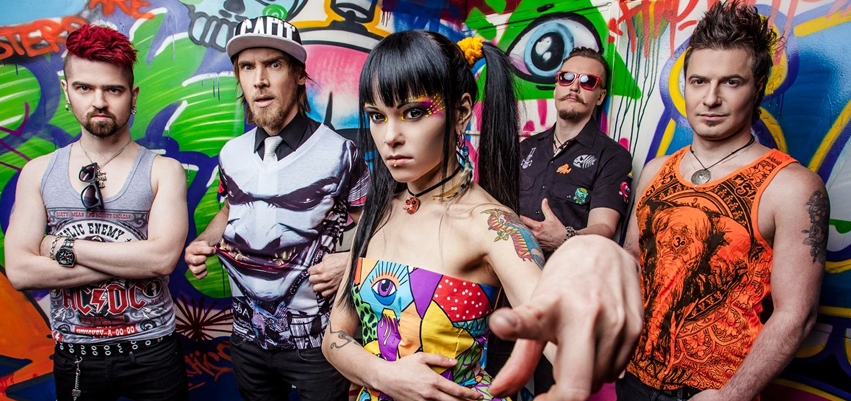

Slot 1
Slot 1  2 войны
2 войны  Тринити
Тринити  4ever
4ever  F5
F5  Шестой
Шестой

Текущий состав группы (жми на фото)
Игорь «КЭШ» Лобанов — вокал (2002 — настоящее время). Игорь «Тренер Кэш» Лобанов — советский и российский спортсмен, гитарист, продюсер, музыкант, вокалист, основатель групп End Zone и Слот, соавторство проектов Валькирия и Гандурас. Сольный проект группа МодеМ , экранизация клипа на песню Шанель №6 режиссёром которого является Саша Stone Рыжков.
Детальнее на Вики.
Детальнее на Вики.
Дария «Нуки» Ставрович — вокал (2006 — настоящее время).Да́рия Серге́евна Ста́врович (известна как Нуки род. 1 февраля 1986) — российская певица, композитор, вокалистка группы «Слот». В составе группы принимала участие в записи семи студийных альбомов с её вокалом, включая переиздание альбома «2 войны». С 2012 года певица также работает над сольным проектом н¥ки, в рамках которого выпустила три студийных альбома. В 2016 году — полуфиналист проекта «Голос», 5-й сезон.
Детальнее на Вики.
Детальнее на Вики.